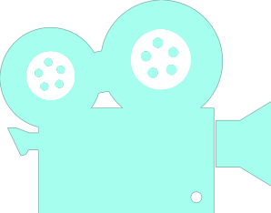

Although the implementation of electronic devices and resources in the curriculum of schools has made learning more engaging than what it had been previously, many students still struggle with feeling enthusiasm for the material covered through two-dimensional image displays, in and outside of class. Now with the use of augmented reality, students will have a better grasp for concepts usually represented in still or flat imagery and instead see them in a polished and dynamic fashion.
EON Experience AVR is an example of how it can be used both inside and outside of class. Developed by EON Reality, it is an augmented reality and virtual reality based personalized library. With an individual piece of equipment for each student, teachers are able to explain the topic alongside a visual, as well as incorporate pauses to ask questions with answer options displayed. This helps promote creativity in subjects such as anatomy, biology, geography, physics, music, engineering, and astronomy. A product with a more specific use would be Dáskalos Chemistry, which is an interactive science teacher for augmented reality. It simulates various lessons from a nature sciences reference book, such as platonic solids, optical lens systems, momentum conservation for pendulums, atoms model with fusion, and vector analysis.
More on EON Experience
More on Dáskalos Chemistry


Some of the earliest uses of augmented reality were in the field of videogames, which integrates visual and audio content with the players environment, as well as in some cases responding to their actions, in real time. It uses the existing environment and overlays the fictional world on top of it. Most augmented reality games are played through devices such as smartphones, tablets, and portable gaming systems.
Holus, created by H+ Technology, is a tabletop platform which converts digital content from a computer, tablet, or smartphone into a three-dimensional holographic experience. It is able to be viewed from four different angles and thus allows various multiplayer opportunities to take place. It is different from various other displays since it is not only used to display a static, multiview image, but it allows for interactivity through tablets, gestures, and even brain control through third-party sensors. Another product, developed by iconic company Microsoft, is the HoloLens, which is the first self-contained, holographic computer which enables engagement with digital content and interaction with holograms in the real world.
More on Holus
More on HoloLens


Holographic animation uses the principles of holography and adds the elements of motion and interactivity. It is a field that creates the often rare mix of art and science, since it heavility uses physics regarding interference and diffraction, as well as mathematical models involving a complex number representing the electric or magnetic field of the light wave used. Besides its artistic uses, scientists use holographic simulations to perform stress analysis, non-destructive testing, and information encryption.
Amply known electronics company Sony has recently been developing the Future Lab Program. Its current prototypes are simply named "N" and "T". The program involving augmented reality is T, which creates an interactive space on a table or object surfaces. It can be used to manipulate images and information projected onto the space. It features object recognition and gesture recognition through an accurate depth sensing system and machine learning. A Japanese performing arts company known as enra combines computer graphics through projected light, animation, choreography, and music. The performance shown goes by the name of "pleaiades".
More on Future Lab T
More on enra


Augmented reality can provide a safer and more manageable navigation experience regarding various kinds of transportation, including aerial. It allows for information to be displayed on a windshield or through a wearable apparatus regarding directions, measurements, weather, traffic conditions, as well as hazard alerts. These navigation systems often make use of gyroscopes, accelerometers, and global positioning to provide accuracy.
WaveOptics is a company which has made a form of augmented reality specializing in land navigation. It is done through a wearable pair of lens which have the difference of using ultra-thin waveguides and photonic crystals, cutting down on bulkiness and power usage. It also has an exceptional performance outdoors regarding the maintenance of stable and persistant full color images. Aero Glass, on the other hand, concentrates on the needs of pilots. It helps visualize terrain, navigation, air traffic, instrument, weather, and airspace information while still paying attention to the control of the aircraft.
More on WaveOptics
More on Aero Glass


Spatial augmented reality is used to simulate objects for purposes of observation and/or interaction involving its physical appearance and sometimes its texture. The use of computer-generated objects allows flexibility that cannot be obtained with physical objects. Spatially augmented reality is a variant of the usual paradigm since it displays the information directly into the users environment.
Burton Inc. is responsible for creating a "true 3D" display with a laser to illuminate certain points in air or water at certain times, which allows it to create active instead of static imagery. They stated that it was the world's first technology to display images without being restrained by screens. The University of Bristol brought a method for creating three-dimensional haptic shapes, which means that it can be physically felt, through the use of ultrasound. Uses for this could range from feeling the differences between materials that would otherwise not be touchable, and understanding the shapes of artifacts in museums.
More on Burton Inc.
More on Bristol Haptics


The human visual system has beeen trained to be efficient in detecting moving objects and odd-shaped objects, which is the reason why much of the human brain is dedicated to vision. This isn't only relating to sight, but also perception and cognition. Visual learning has been proven to be more efficient than simply reading data. Augmented reality takes the already visualized data in two-dimensional format and turns it into more a dynamic and tactful three-dimension format.
Meta has made an augmented reality product known as the Meta 2 headset, which display high definition of 3D models including polyhedrons, anatomical systems, automobile models, and architectural models. It is a pioneering product in the field of Neural Interface Design, which combines neuroscience with digital user experience. This makes the product vastly more intuitive and enables optimum productivity. Magic Leap specializes in merging synthetic digital images into real spaces. Its manner of displaying graphical data and models are of such quality that Google has started investing in this company.
More on Meta 2
More on Magic Leap